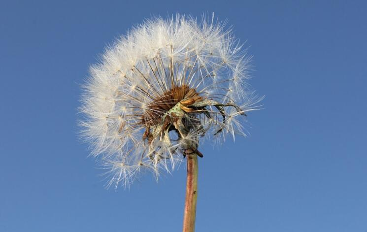
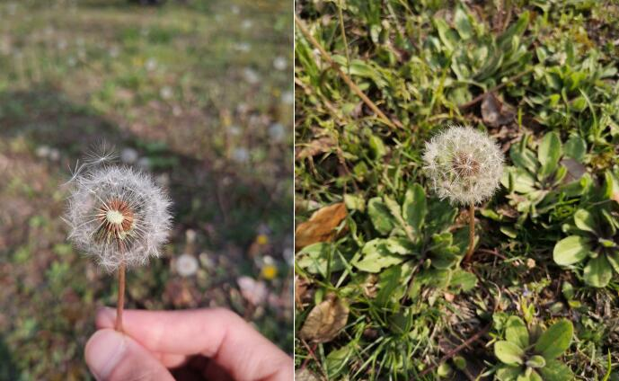

蒲公英
蒲公英属(学名：Taraxacum)植物通称蒲公英、黄花地丁、婆婆丁，华花郎、蒲公草、食用蒲公英、尿床草、西洋蒲公英，为菊目菊科的一属，是温带至亚热带常见的一种植物。蒲公英采孤雌生殖，叶边的形状像狮子的尖牙。其英文名字Dandelion来自法语dent-de-lion，正是狮子牙齿之意。

蒲公英为多年生草本植物，花茎是空心的，折断之后有白色的乳汁。匙形或狭长倒卵形的叶子呈莲座状平铺，羽状浅裂或齿裂。春季花信为4至5月，秋季花期为8至9月。蒲公英头状花序，种子上有白色冠毛结成的绒球，花开之后随风飘到新的地方孕育新生命。冬末春初抽花茎，顶端生一头状花序。花为亮黄色，由很多细花瓣组成。果实成熟之后，形似一白色绒球，成一朵圆的蒲公英伞，被风吹过会分为带着一粒种子的小白伞。

本站文章均来自互联网，仅供学习参考，如有侵犯您的版权，请邮箱联系我们删除！
 上一篇
上一篇